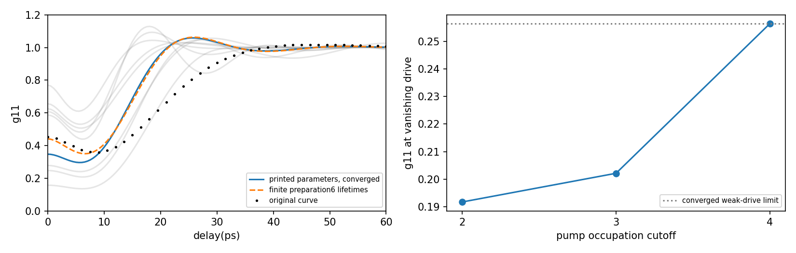
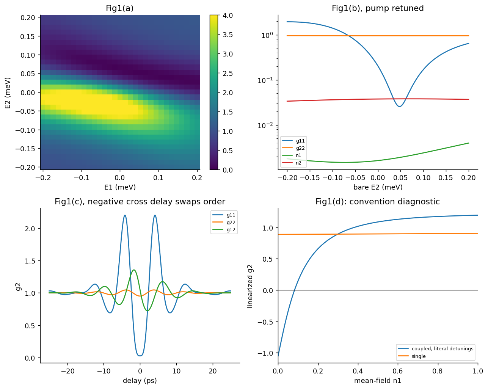
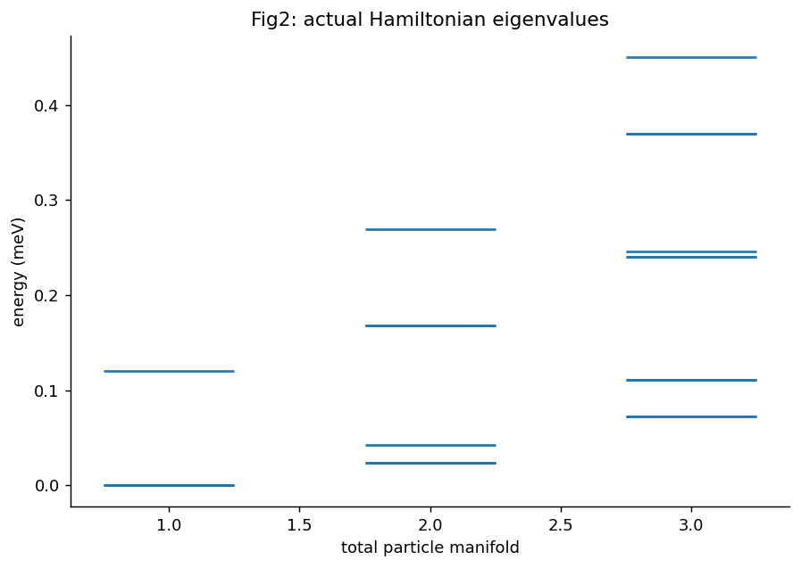
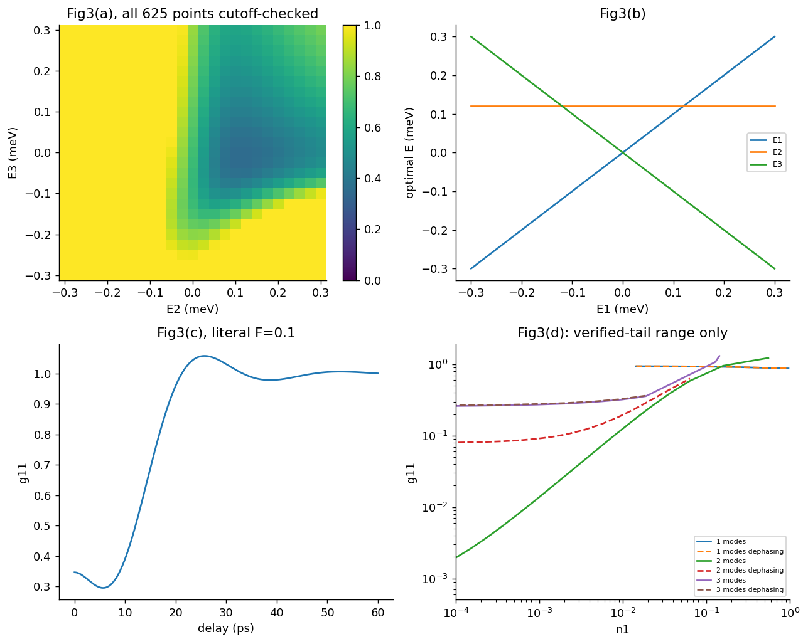

两模强反聚束得到支持；三模及高占据曲线还有实质核对工作。
核对版本：1002.4341v2；已核对公开EPAPS · 期刊原文
泵浦截止3时，边界概率可仅1.6e−11，归一化弱驱动g2仍偏差约21%；两个信号光子的F⁸首阶需要最高4个泵浦光子的中间态。
仍需核对：线宽/驱动因子二、低截断和有限制备时间均未恢复整条源曲线。不能因某个零延迟值接近，就认定作者采用了那种条件；当前仍是未完成诊断。
任务范围：三模完整源曲线、正文0.28与源图0.4522尚未统一；源条件收敛g2(0)=0.34699064724。线宽、驱动、截断和有限制备时间控制均未恢复整条曲线。；原正Gaussian曲线和高于已受控占据范围的原条件计算仍未完成；625点热图已经完成，不重复计作待做。

必要的源结果与独立计算对照。Comparison reference: Phys. Rev. Lett. 104, 183601 (2010), Single Photons from Coupled Quantum Modes, DOI 10.1103/PhysRevLett.104.183601; fixed source 1002.4341v2；已核对公开EPAPS. Colored curves/maps are independent calculations; any source marks are limited validation excerpts, excluded from the repository content license. Graphic agreement does not establish author-array equality. Original figures and digitized source point sets are not redistributed.

独立计算结果。诊断变体以图例和说明为准，不自动替代论文条件。

独立计算结果。诊断变体以图例和说明为准，不自动替代论文条件。

独立计算结果。诊断变体以图例和说明为准，不自动替代论文条件。